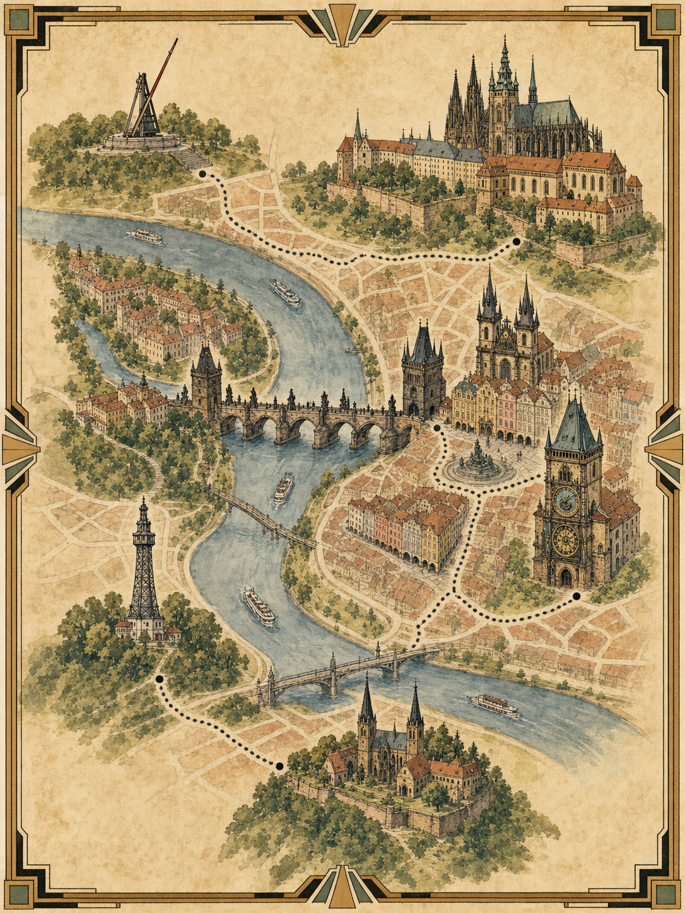

Central Europe / Slow Route
中欧八日
湖区慢行
Budapest / Vienna / Salzkammergut / Prague

把当地居民建议的顺路动线放进主线: 先到维也纳, 再向西进湖区, 经萨尔茨堡转布拉格。
Route / Four Acts
四段旅行
不走回头路
布达佩斯 / 2晚
抵达恢复、多瑙河夜景、中央市场、自由桥和温泉。New York Cafe只作为可替换咖啡点。
维也纳 / 1晚
Budapest直达Vienna, 午后看Belvedere、Karlskirche和一间咖啡馆。
奥地利湖区 / 2晚
住St. Gilgen或Fuschl, 走Fuschlsee、Wolfgangsee、Strobl, 主线避开Hallstatt。
布拉格 / 2晚
经Salzburg抵达, 老城、查理大桥、城堡区、约瑟夫城和Letna夕阳收尾。
Act I / Budapest
多瑙河两夜
恢复时差

D1只看圣伊什特万、国会大厦、链桥和夜景。D2早去中央市场, 下午自由桥、Gellert山脚和Rudas Baths。
Budapest / Daily Lines
两天只做
两条主线
佩斯夜景线
St. Stephen - Liberty Square - Parliament - Shoes - Chain Bridge - Buda Castle外观。
市场与自由桥
Central Market - Liberty Bridge - Gellert Cave Church - Bartok Bela Boulevard - Rudas Baths。
Act II / Vienna
一晚也要
看见Klimt

Budapest-Keleti直达Wien Hbf。午后把Upper Belvedere、Karlskirche、Secession、Naschmarkt和St. Stephen's串成一条。
Transport / Westbound
先维也纳
再进湖区
Budapest → Vienna
约2小时40分, 中午前后抵达最舒服。
Vienna → Salzburg
西部铁路主轴, 次日上午出发, 转湖区最顺。
Bus 150 → St. Gilgen
Salzburg Hbf接150路, 经Fuschl到St. Gilgen / Strobl。
Lake → Salzburg → Prague
D6上午回Salzburg, 半日中转后去布拉格。
Act III / Salzkammergut
湖光深处
不赶热闹
核心不再是Hallstatt, 而是St. Gilgen、Fuschlsee、Wolfgangsee和Strobl。住宿放湖边小镇, 让自然风光而不是打卡人潮成为主角。
Lake District / Nature Route
一座山
一段湖岸
Vienna - Salzburg - Bus 150
到Fuschl或St. Gilgen入住。下午只走湖边、码头和老街。
晴天: Zwolferhorn / Schafberg 二选一
Zwolferhorn更顺更轻; Schafberg更经典, 但游客更多。
Wolfgangsee 船或巴士
串St. Gilgen - St. Wolfgang - Strobl, 不做商业化主停留。
Bad Ischl + Fuschlsee
阴雨天改咖啡馆和湖边短步道。
Act IV / Prague
经Salzburg
抵达布拉格

D6湖区回Salzburg, 轻走Mirabell和老城外观后转Prague。D7清晨查理大桥、城堡区、Josefov和Letna夕阳。
Food / Photo Appendix
顺路吃喝
顺路拍照
Final Checklist